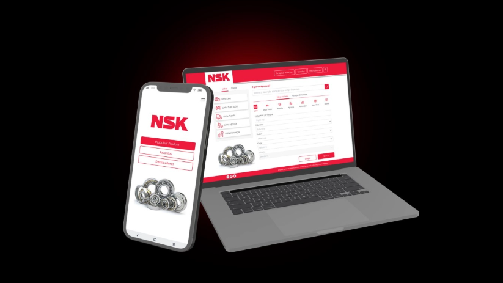
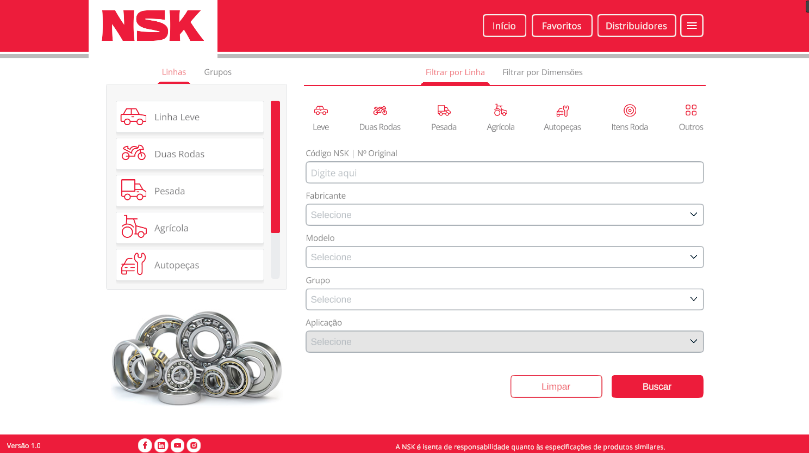
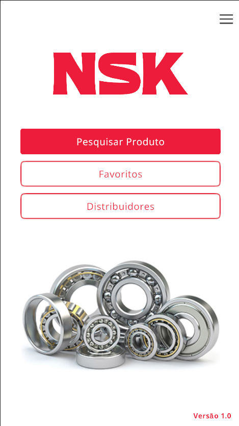

Mobile and Windows catalogue app for the company NSK Brasil.
Project Information
Company: Plan XP Marketing Digital Ltda
Client: NSK Brasil Ltda
Platforms: Android, iOS, Windows
Team Members: One other Unity developer, 1 backend developer,
1 UI/UX artist
My Role: Unity Developer

This app was made to catalogue products and resellers of NSK products.


Both Windows and mobile versions have the same core functionality, the only difference being the UI layout.
Mobile version initial registration demonstration.
An external API is used to fetch official country, state and cities to populate
the dropdowns.
Mobile version product search demonstration.
After registration, the app requests from a custom API to download a
catalogue table containing the information of all products and resellers,
the user simply filters through the data if needed.
Windows version reseller search demonstration.
Showing other features. All contact information are external links that take to other websites through the user's own browser.
Due to the fact that this app was sent to NSK Brasil directly and was never
published to the app stores, there is no link or build to share.
The button below will take you to the announcement page of this project on
Plan XP's website. It's possible to contact the company and ask about this project
and my participation in it if needed.